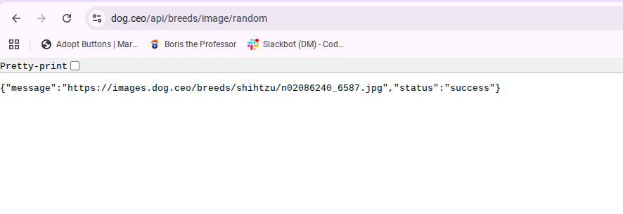
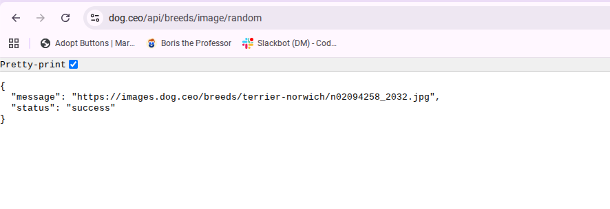
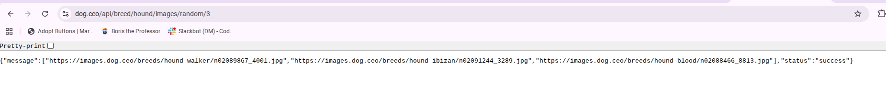
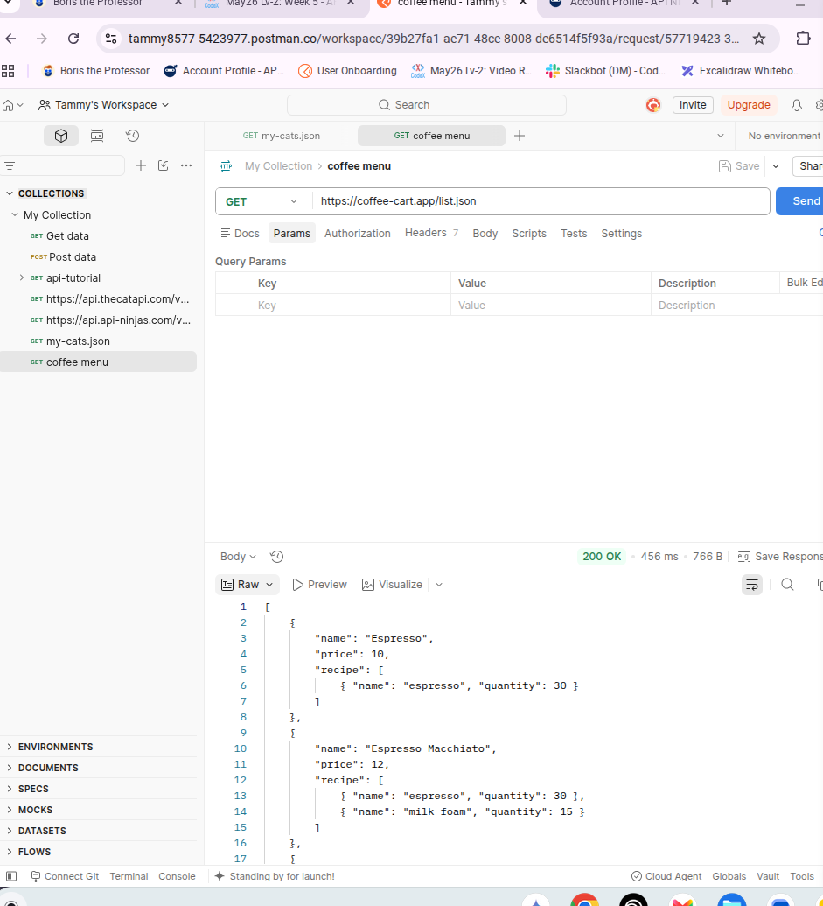

Parameters and Arguments
Today I learned that a parameter is the variable inside a function, while an argument is the value I hand to the function when I call it. I used this with the describe function to pass a whole cat record into it.


What I did: I sent the Dog CEO API request in my browser. What I saw: The server returned the dog image URL and a success status.
{
"message": "https://images.dog.ceo/breeds/hound-afghan/n02088094_2062.jpg",
"status": "success"
}
What I did: I requested three random hound images from the Dog CEO API. What I saw: The response returned a list of three image addresses inside a message field.
{
"message": [
"https://images.dog.ceo/breeds/hound-ibizan/n02091244_1488.jpg",
"https://images.dog.ceo/breeds/hound-ibizan/n02091244_4107.jpg",
"https://images.dog.ceo/breeds/hound-afghan/n02088094_4310.jpg"
],
"status": "success"
}I learned that JSON is strict about its syntax. When I practiced API responses, I saw that property names need double quotes and that an extra comma can make the response invalid JSON.
{
"message": "success",
"status": "success"
}
What I did: I sent a GET request to the coffee shop menu address in Postman. What I saw: The server returned ten drinks and the JSON was already formatted with indentation.
[
{
"name": "Espresso",
"price": 10,
"recipe": [
{ "name": "espresso", "quantity": 30 }
]
},
{
"name": "Espresso Macchiato",
"price": 12,
"recipe": [
{ "name": "espresso", "quantity": 30 },
{ "name": "milk foam", "quantity": 15 }
]
},
{
"name": "Cappuccino",
"price": 19,
"recipe": [
{ "name": "espresso", "quantity": 30 },
{ "name": "steamed milk", "quantity": 20 },
{ "name": "milk foam", "quantity": 50 }
]
},
{
"name": "Mocha",
"price": 8,
"recipe": [
{ "name": "espresso", "quantity": 30 },
{ "name": "chocolate syrup", "quantity": 20 },
{ "name": "steamed milk", "quantity": 25 },
{ "name": "whipped cream", "quantity": 25 }
]
},
{
"name": "Flat White",
"price": 18,
"recipe": [
{ "name": "espresso", "quantity": 30 },
{ "name": "steamed milk", "quantity": 50 }
]
},
{
"name": "Americano",
"price": 7,
"recipe": [
{ "name": "espresso", "quantity": 30 },
{ "name": "water", "quantity": 70 }
]
},
{
"name": "Cafe Latte",
"price": 16,
"recipe": [
{ "name": "espresso", "quantity": 30 },
{ "name": "steamed milk", "quantity": 50 },
{ "name": "milk foam", "quantity": 20 }
]
},
{
"name": "Espresso Con Panna",
"price": 14,
"recipe": [
{ "name": "espresso", "quantity": 30 },
{ "name": "whipped cream", "quantity": 15 }
]
},
{
"name": "Cafe Breve",
"price": 15,
"recipe": [
{ "name": "espresso", "quantity": 25 },
{ "name": "steamed milk", "quantity": 30 },
{ "name": "steamed cream", "quantity": 30 },
{ "name": "milk foam", "quantity": 15 }
]
},
{
"name": "(Discounted) Mocha",
"price": 4,
"discounted": true,
"recipe": [
{ "name": "espresso", "quantity": 30 },
{ "name": "chocolate syrup", "quantity": 20 },
{ "name": "steamed milk", "quantity": 25 },
{ "name": "whipped cream", "quantity": 25 }
]
}
]I learned that an API key should be sent in a header instead of being placed in the URL. I added the X-Api-Key header in Postman and sent the request successfully.
I learned that a status code tells me how the server handled my request. When Postman showed 200 OK, the server had successfully received my request and returned a response.
Today I learned that a parameter is the variable inside a function, while an argument is the value I hand to the function when I call it. I used this with the describe function to pass a whole cat record into it.
I learned that a JavaScript object literal can hold the same kind of record as JSON. The property names can be written without quotation marks in JavaScript, while JSON requires double quotation marks.
I learned that console.log() displays a value in the console,
while return sends a value back from a function so the program
can use it afterward. The return value from my summarize()
function is the sentence describing the cat.
I built a Day 4 page with a button that runs my summarize()
function. When I clicked the button, the cat summary appeared on the page.
Before I fixed the function, I learned that using console.log()
instead of returning a value could result in undefined.
Today I learned how map() can take every record in an array
and create a new array from the values returned by a function. I used
map() with my summarize() function to turn each
cat record into one sentence, then used join() to put the
sentences together into one report.
I learned how to move a report from the terminal onto a webpage. I used
a button and an event listener so that clicking the button runs the
report code and places all 11 cat lines into a pre element.
This helped me see how JavaScript can take data and update what a visitor
sees on the page.